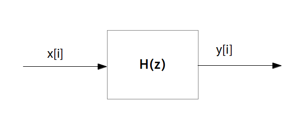
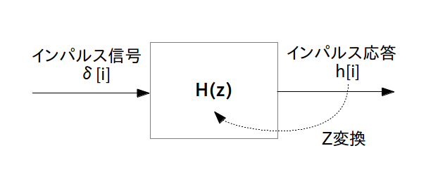

フィルタの伝達関数 $\textrm{H}(z)$ を求めたら「ブロック図」または「ブロック線図」を描くことが出来るようになります。
ブロック図とはフィルタの内部構造を記号や矢印で繋いで信号の流れを表した図の事でフィルタの設計図に相当します(図1)。
伝達関数 $\textrm{H}(z)$ を持つディジタル線形時不変フィルタに $x[i]$ を入力すると $y[i]$ が出てくる
ちなみにインパルス信号 $\delta[i]$ とインパルス応答 $h[i]$ と伝達関数 $\textrm{H}(z)$ の関係をブロック図で書けば次のように表されます。
